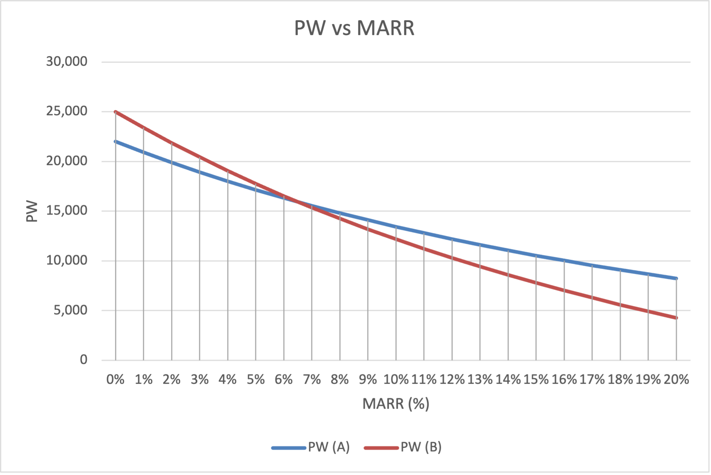

Chapter 7 Rate of Return Analysis: Multiple Alternatives
This chapter presents methods to evaluate two or more alternatives using a rate of return (ROR) comparison. While a correctly performed ROR evaluation yields the same selection as Present Worth (PW) and Annual Worth (AW) analyses, its computational procedure differs significantly. Crucially, simply selecting the alternative with the highest individual ROR will not necessarily identify the best option. An alternative might have a high ROR but generate very little total value. Therefore, to compare alternatives on the basis of ROR, an incremental analysis is required.
7.1 Why Incremental Analysis Is Necessary
When comparing mutually exclusive alternatives, incremental analysis ensures proper comparison as highlighted in the following example.
Example:
Sarah’s father gives her a gift of $10,000 and motivates her to put it in a savings account with a guaranteed APR of 3%. However, Sarah, having taken the Engineering Economy course, learned that she can do better, but with some risks. Hence, she is evaluating two investment alternatives:
-
A:
Peer-to-peer lending opportunity that requires an investment of $5,000 and has an internal rate of return of 20% per year.
-
B:
Investment in a stock portfolio that requires $9,000 and has an of 15% per year.
Intuitively, Sarah might conclude that the better alternative is the one with the larger return, which is A in this case. However, this is not necessarily true.
While A has the higher projected return, its initial investment ($5,000) is much less than her total available savings ($10,000). What happens to the investment capital that is left over?
It is assumed that her excess funds will be invested at her baseline MARR of 3% (the savings account). Using this assumption, it is possible to determine the true financial consequences of the two alternative investments.
If alternative A is selected, $5,000 will yield a return of 20% per year. The remaining $5,000 will be invested at her MARR of 3% per year. The overall rate of return on her total savings will be the weighted average. Thus, if alternative A is selected, the overall ROR is calculated as follows:
Conversely, if alternative B is selected, $9,000 will be invested at 15% per year, and the remaining $1,000 will earn 3% per year. The weighted average for alternative B is:
This demonstrates that alternative B, despite having a lower individual rate of return, yields a higher overall return on Sarah’s total available capital.
Note: Present Worth Verification
We can also verify this conclusion by calculating the Present Worth (PW) of each alternative over a one-year period. For alternative A, the initial $5,000 investment grows by 20%:
For alternative B, the initial $9,000 investment grows by 15%:
Since , the PW analysis aligns perfectly with the overall ROR comparison.
Important: Individual Projects
When independent projects are evaluated, no incremental analysis is necessary between projects.
7.2 Calculation of Incremental Cash Flows
The incremental ROR method strictly requires that the alternatives be evaluated over an equal-service study period (such as the LCM of their useful lives). Hence, for unequal life alternatives, the cash flows must be developed using the LCM or the study period methods (see Section 4.2.2 of Ch. 4).
Definition: Incremental Cash Flow
The incremental cash flow is the difference between two cash flows, and , where alternative has the higher initial investment:
| Incremental Cash Flow | |||
The incremental cash flow represents the extra investment or cost required if the alternative with the larger first cost is selected.
7.3 ROR Evaluation Using PW
7.3.1 Comparing Two Alternatives
Let denote the ROR of the incremental cash flow series .
Definition:
If the rate of return available through the incremental cash flow equals or exceeds the MARR, the alternative associated with the extra investment should be selected:
-
•
Select A.
-
•
Select B.
The rationale for making the selection decision is the same as if only one alternative is under consideration, that alternative being the one represented by the incremental cash flow series. When viewed in this manner, it is obvious that unless this investment yields a rate of return equal to or greater than the MARR, the extra investment should not be made.
Note: Why Compare to MARR, Not Zero?
The MARR represents the opportunity cost of capital: it is the return your money would earn if invested elsewhere. For instance, U.S. Treasury bonds offer a virtually risk-free return and can serve as a natural MARR baseline. A positive return alone is not sufficient: the project must outperform this guaranteed alternative.
If but , the extra capital invested in B earns less than it would in the baseline. You would be better off choosing the cheaper alternative and investing the difference at the MARR rate.
Not only must the return on the extra investment meet or exceed the , but also the return on the investment that is common to both alternatives must meet or exceed the . Accordingly, prior to performing an incremental ROR analysis, it is advisable to determine the internal rate of return for each alternative.
Important: Revenue Alternatives Case
This can be done only for revenue alternatives, because cost alternatives have only cost (negative) cash flows and no positive can be determined. For cost alternatives, skip this step and proceed directly to the incremental pairwise comparisons.
Example: Incremental Cash Flow Analysis
A company is evaluating two mutually exclusive machines. The MARR is 10% per year. The cash flow details are as follows:
| Machine A | Machine B | |
| First Cost | -$10,000 | -$25,000 |
| Annual Revenue | $5,000 | $9,000 |
| Salvage Value | $2,000 | $5,000 |
| Life (years) | 5 | 5 |
Solution:
Since both alternatives are revenue alternatives, determine the individual ROR for each. For Machine A:
For Machine B:
Both and exceed the MARR of 10%, so both alternatives are economically viable. At this point, Machine A has the higher ROR, but the incremental analysis must be performed to determine which is the better choice.
Since Machine B has the higher first cost, the incremental cash flow is computed as :
| Year | Machine A | Machine B | Incremental (BA) |
|---|---|---|---|
| 0 | -$10,000 | -$25,000 | -$15,000 |
| 1 | $5,000 | $9,000 | $4,000 |
| 2 | $5,000 | $9,000 | $4,000 |
| 3 | $5,000 | $9,000 | $4,000 |
| 4 | $5,000 | $9,000 | $4,000 |
| 5 | $7,000 | $14,000 | $7,000 |
To find , decompose the incremental series into a uniform $4,000/yr over 5 years plus the $3,000 salvage value difference at year 5, and solve:
Trial at :
Trial at :
Interpolating between 14% and 16%:
Since , the extra investment in Machine B is justified. Therefore, select Machine B.
Note:
Despite Machine A having a significantly higher individual ROR (43.11% vs. 26.54%), Machine B is the correct choice. The incremental analysis shows that the additional $15,000 investment earns 14.76%, which exceeds the MARR.
Solution by Excel
This problem is solved using the IRR function in Excel. Each alternative’s net cash flows are entered in a column, and the incremental column is computed as . The IRR function is applied to each column:
=IRR(B5:B10) 43.11% =IRR(C5:C10) 26.54% =IRR(D5:D10) 14.74%
Example: Incremental Analysis with Unequal Lives
Consider two revenue alternatives with different service lives. The MARR is 10% per year.
| Machine A | Machine B | |
| First Cost | -$8,000 | -$20,000 |
| Annual Revenue | $6,000 | $7,000 |
| Salvage Value | $1,000 | $3,000 |
| Life (years) | 3 | 6 |
Solution:
Since the lives differ, the LCM of 3 and 6 is 6 years. Machine A must be purchased twice over the 6-year study period: once at year 0 and again at year 3.
The individual ROR for each alternative (computed over its own life) is:
Both exceed the MARR, so both are viable candidates.
At year 3, Machine A reaches the end of its first life. The net cash flow at that point combines three items: the salvage of the old machine ($1,000), the purchase of the replacement (-$8,000), and the annual revenue ($6,000). This yields a net of .
The LCM cash flows and the incremental series are:
| Year | Machine A | Machine B | Incremental (BA) |
|---|---|---|---|
| 0 | -$8,000 | -$20,000 | -$12,000 |
| 1 | $6,000 | $7,000 | $1,000 |
| 2 | $6,000 | $7,000 | $1,000 |
| 3 | -$1,000 | $7,000 | $8,000 |
| 4 | $6,000 | $7,000 | $1,000 |
| 5 | $6,000 | $7,000 | $1,000 |
| 6 | $7,000 | $10,000 | $3,000 |
The incremental series can be decomposed as a uniform $1,000/yr for 6 years, plus $7,000 at year 3, plus $2,000 at year 6:
Trial at :
Trial at :
Interpolating between 6% and 8%:
Since , the extra investment in Machine B is not justified. Therefore, select Machine A.
Note:
Even though Machine B avoids the reinvestment hassle and provides steady cash flows, the incremental return of 6.54% does not meet the MARR. The cheaper Machine A, replaced every 3 years, is the economically superior choice.
Visualizing the Decision (PW vs. MARR):
Plotting the Present Worth of both alternatives across various MARR values provides a clear visual explanation of the incremental decision (see Figure 7.3). The blue curve represents the PW of Machine A and the red curve represents that of Machine B.
-
•
The curves intersect at exactly , which is the incremental rate of return (). This is the “breakeven” interest rate.
-
•
For any , the PW of Machine B (red curve) is higher than Machine A, meaning the extra investment in B is economically justified.
-
•
For any (including the company’s actual MARR of 10%), the PW of Machine A (blue curve) is higher, confirming that Machine A is the superior choice.

Note: Steps for Incremental ROR Analysis
The procedure for an incremental ROR analysis of two mutually exclusive alternatives is as follows:
-
1.
Order the alternatives by increasing first cost.
-
2.
(Revenue alternatives only) Compute for each alternative. Any alternative with is eliminated.
-
3.
Calculate the incremental cash flow: , where B has the higher first cost.
-
4.
Determine the incremental rate of return from the incremental cash flow series.
-
5.
If , select the higher-cost alternative (B). Otherwise, select the lower-cost alternative (A).
7.3.2 Comparing Multiple Alternatives
When more than two mutually exclusive alternatives exist, the incremental ROR method extends naturally by performing successive pairwise comparisons. The alternatives are ranked by initial investment, and the winning alternative from each comparison advances to face the next challenger.
The steps for incremental ROR evaluation for multiple alternatives are summarized below:
-
1.
Rank the alternatives from smallest to largest initial investment.
-
2.
(Revenue alternatives only) Compute for each alternative. Discard any alternative with .
-
3.
Compute the incremental cash flow between the first surviving alternative and the next one (using the LCM of their lives if they differ).
-
4.
Determine . If , the challenger wins; otherwise, the current alternative survives.
-
5.
Repeat steps 3–4 with the winner against the next alternative until all have been compared.
Important: The “Do Nothing” Baseline
For revenue alternatives, the “Do Nothing” (DN) alternative is implicitly the first defender with an initial cost of $0. Screening out alternatives with an individual is mathematically equivalent to performing an incremental comparison against DN. If all individual ROR values fall below the MARR, all alternatives lose to DN, and no investment should be made.
Example: Multiple Alternatives with Different Lives
A logistics company is considering four mutually exclusive Automated Storage and Retrieval Systems to upgrade its main warehouse. The MARR is 10% per year.
| Alternative | Initial Cost | Annual Revenue | Salvage | Life |
|---|---|---|---|---|
| B (Semi-Automated) | -$2,500,000 | $1,100,000 | $200,000 | 3 yr |
| D (Refurbished) | -$3,500,000 | $950,000 | $150,000 | 4 yr |
| C (Standard AS/RS) | -$5,000,000 | $1,600,000 | $400,000 | 4 yr |
| A (Fully Automated) | -$7,000,000 | $1,900,000 | $500,000 | 6 yr |
The alternatives are already ordered by increasing initial cost.
Solution:
Step 1: Screen individual ROR values.
Since these are revenue alternatives, compute for each:
| viable | ||||
| discard | ||||
| viable | ||||
| viable |
Alternative D is eliminated. The surviving alternatives are B, C, and A.
Step 2: Pairwise comparison C vs. B.
The LCM of the remaining lives (3, 4, 6) is 12 years. To find the 12-year incremental ROR, one could set up the PW of each alternative over 12 years and equate them, or use the IRR function in Excel on the expanded 12-year incremental cash flows . Solving yields:
Since , the extra investment in C is not justified. B survives.
Step 3: Pairwise comparison A vs. B.
Similarly, equating the PW of alternatives A and B over the 12-year LCM, , yields:
Since , the extra investment in A is justified. A wins.
Conclusion:
Select Alternative A (Fully Automated system).
Note:
Note that Alternative B had the highest individual ROR (18.33%), yet Alternative A (17.08%) is the correct choice. This illustrates exactly why incremental analysis is necessary: the alternative with the highest ROR is not always the best investment.
7.4 ROR Evaluation Using AW
The incremental ROR analysis can also be performed using the Annual Worth (AW) method instead of Present Worth. The primary advantage of using AW is that it naturally satisfies the equal-service requirement without needing the Lowest Common Multiple (LCM) of lives. Because the AW of one life cycle is equivalent to the AW over any number of identical life cycles, alternatives with different service lives can be compared directly using their single-cycle cash flows.
To find the incremental rate of return using the AW method, set the Annual Worth of both alternatives equal to each other and solve for :
The resulting will be exactly the same as the one found using the PW method over the LCM.
Note: Why Calculate ROR Instead of Just AW?
Since evaluating the (or ) at the MARR immediately identifies the best alternative and is computationally simpler, you might wonder why we perform ROR analysis at all. There are two primary reasons:
-
•
Management Preference: Decision-makers often prefer percentage rates over absolute dollar amounts because percentages are easier to intuitively compare against corporate hurdle rates.
-
•
Sensitivity Analysis: The incremental rate of return is the exact “breakeven” interest rate between two alternatives. Knowing this value tells you exactly how sensitive your decision is to fluctuations in the MARR.
Example: Incremental ROR using AW
Reconsider the pairwise comparisons from the previous AS/RS example. Instead of using the 12-year LCM, we can find the incremental ROR using the AW of their single life cycles.
Comparison C vs. B:
Set :
Solving yields:
This exactly matches the PW result. Since , B survives.
Comparison A vs. B:
Set :
Solving yields:
Since , Alternative A is the winner, perfectly mirroring the PW approach without expanding the cash flows to 12 years.